This is just example
Ungewöhnliche und merkwürdige Freundschaften
An der Welt gibt es immer noch Menschen, die glauben, dass Tiere nur eine gewöhlichstens dummen Bestien sind.
Diese ungewöhnlichen und merkwürdigen Tierfreundschaften, die ich euch aber vorstellen werde, sind ein Beweis,
dass Die Tiere fähig zu lieben und zu mitleiden sind, genauso wie wir.
Gefühle bei Tieren, das war in der Wissenschaft lange ein Tabu.
Als die britische Primatenforscherin Jane Goodall in den Sechzigerjahren begann,
das Varhalten von Schimpansen zu erforschen. Sie wurde von Kollegen kritisiert,
weil sie ihren Versuchsobjekten Namen gab, statt sie einfach zu numerieren.
Sympathisch, erfüllen mit reinen Emotionen und viel Wärme, diese unwahrscheinlichen Kombinationen
von Tierfreundschaften erregen die Frage “Warum”. Warum sollten diese Tiere nicht auch zu
Empfindungen fähig sein? Die Antwort ist ganz einfach. Der amerikanische Verhaltensbiologe Marc Bekoff
ist überzeugt, dass Tiere ebenso wie Menschen Liebe, Hass, Freude, Trauer oder Mitleid empfinden.
Einige Tiere, wie Löwen, Hunde und Elefanten sind mit ihren festen Beziehungen bekannt,
die sie mit gleichgearteten bilden. Ohne ihre Rudels aber beginnen sie außer eigenen Arten soziale Beziehungen
zu suchen. Andere Eigenbrötlern schließen mit Tiere eine “Eltern-Kind” Beziehung. Oft vertreiben sie sich mit
diesen Tiere die Zeit. Der Elternsinstinkt für eine ist ein Geschenk für andere. Besonders wenn die Empfänger
dieser Achtung ohne eine Elternsorge geblieben sind und das haben ihnen geholfen, zu wachsen und zu überleben.
Es ist egal, was für ein Grund zu diesen Freundshaften ist. Das beweist, dass die Tiere zehr emotional können sein.
- Die afrikanische Elefantin “Babals” und die schwarze Labradorin “Bella”.
| 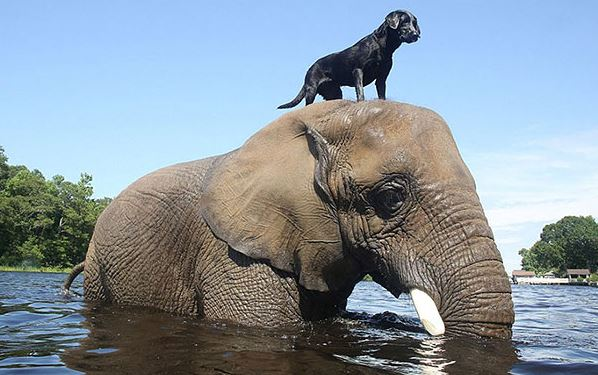 |
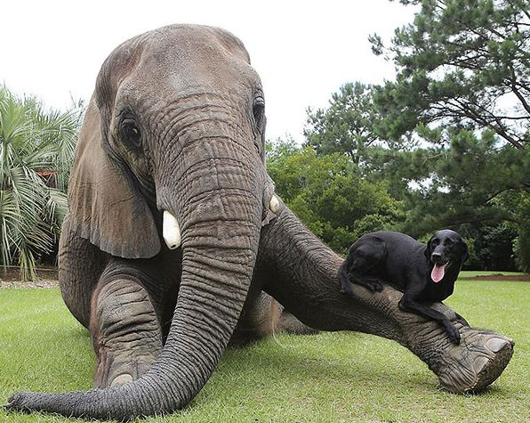 |
| Sie sind sehr gute Freunde, trotz ihr Unterschied in der Größe. Babals war von Wilderer
in Afrika gerettet und sie hat nach einem amerikanischen safari Schutzgebiet weggebracht.
Bella ist die Hündin von einem Mitarbeiter da. Die beiden Tiere sind einen netten Anblick,
besonders wenn die Hündin die Elefantin häufig genauso wie Sprungbrett benutzt. |
- Die Giraffe „Bea“ und der Strauß „Wilma“.
| 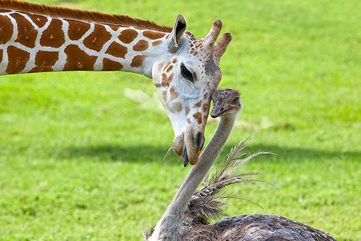 |
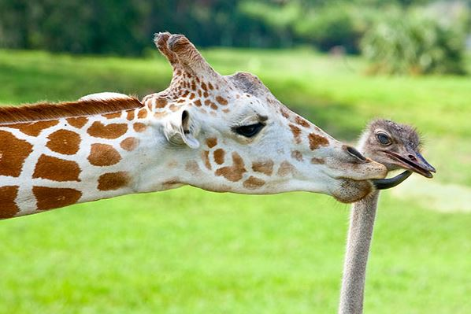 |
| 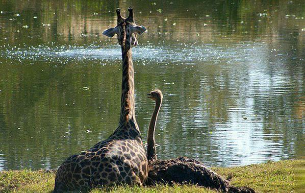 |
| Bea und Wilma wohnen im Zoo in Busch Gärten in den USA. Sie schließen dort eine
feste Freundschaft. Der Platz , wo sie wohnen, ist riesig . Das bedeutet, dass diese Tiere
ungezwungen sind, die Zeit zusammen zu verbringen. Dagegen machen sie das auf ihren Wunsch. |
- Der Hund „Tini“ und der Fuchs „Snifer“.
| 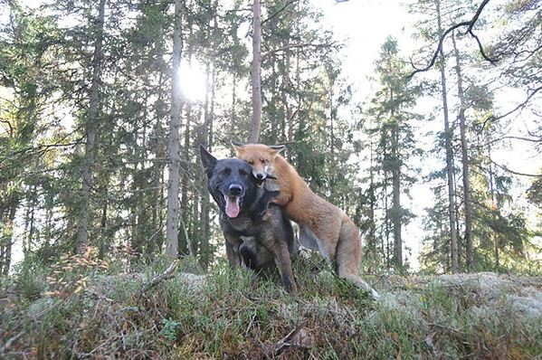 |
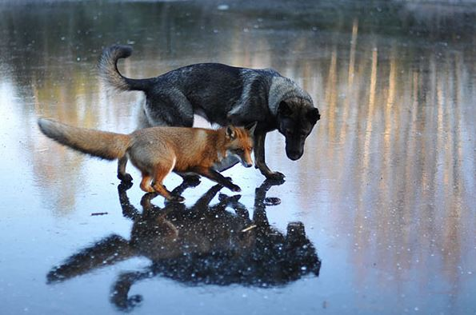 |
| 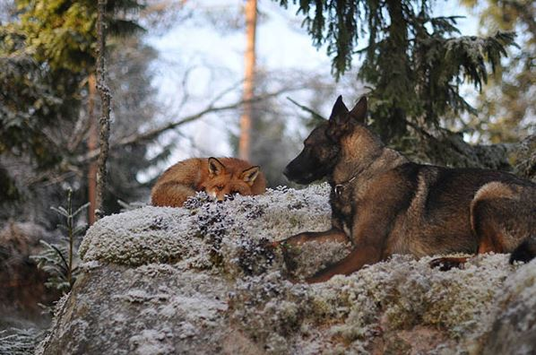 |
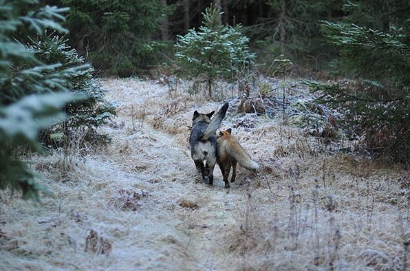 |
| Timi hat sich sofort mit Snifer befreundet, als sie sich in den norwedischen Wälder
getroffen haben. Der Besitzer des Hundes fotografiert die Tiere, während ihres Spiel mitten im Wand. |
- Der Hund “Torki” und die Eule ”Schrek”
| 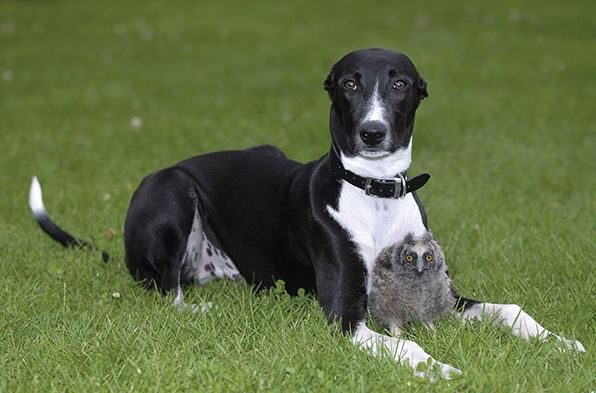 |
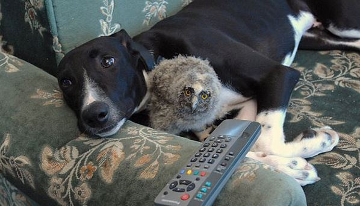 |
| Als Torki erst 6 Monate alt war, adoptiert er die kleine Eule Schrek. Schrek war von
ihren Eltern getrennt, weil ihr Besitzer gemeint hat, dass die Euleneltern ihr Kind essen werden. |